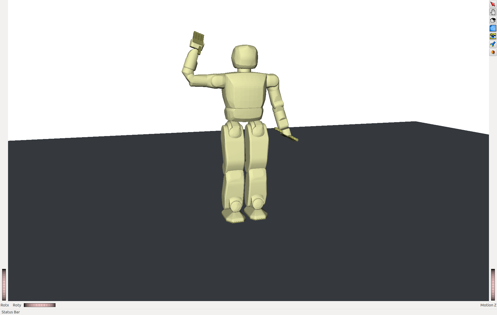

MAESTOR
MAESTOR stands for Machine And Environment Simulation Translation Over Ros. The purpose behind MAESTOR was to create a flexible system that would allow users to rapidly develop gestures for the HUBO robot as well as offer the ability to integrate external sensors on the robot. The name is comes from an inside joke among the original programmers on the project with the original name MAESTRO. I and another programmer used to very often type maestor into the terminal and laugh at each other when it didn't work. Because of this when we reached a point of the project where we basically started another iteration of it we decided to change the name.
One of the great things about MAESTOR is that it has two main operating modes, a simulation mode that can be run on an external computer and a hardware mode that can be run on the robot. The beauty of the system is that users can develop gestures and movements in simulation on their own computer then take the same code without changing anything and run it on the hardware robot with the same effect. This makes it possible for users to rapidly develop gestures and movements for HUBO, making the HUBO robot an easier robot to do research on.